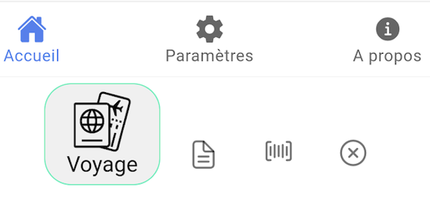
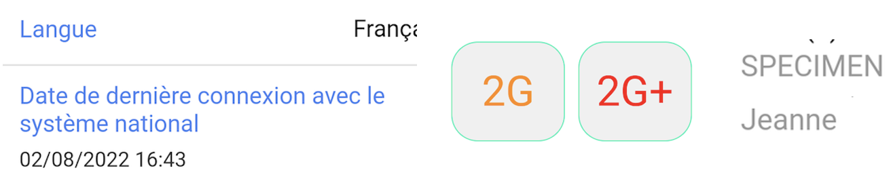
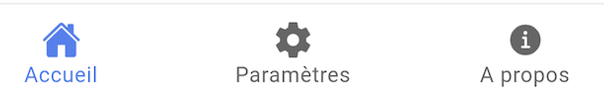
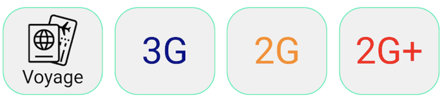
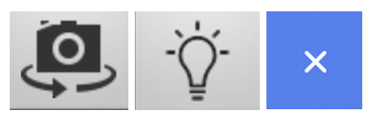
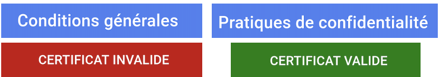
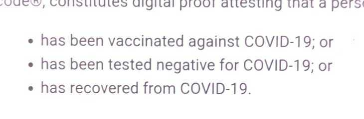
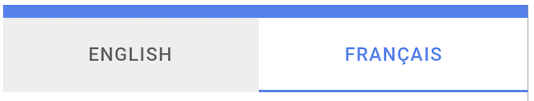

Introduction
Ce rapport accompagne le relevé d’audit effectué sur l’application « CovidCheck ».
L’évaluation pour les applications mobiles consiste à vérifier l’ensemble des critères de la norme européenne d’accessibilité pour les produits et services EN 301 549 (v3.2.1). La méthodologie de test se base sur le Référentiel d’évaluation de l’accessibilité des applications mobiles (RAAM 1).
L’audit a été réalisé à l’aide des technologies d’assistance disponibles, des tests de restitution avec le lecteur d’écran du système d’exploitation (TalkBack sur Android), ainsi que des tests d’adaptation des contenus en fonction des paramètres d’affichage utilisateurs.
- Version Android lors de l’audit : 12
Échantillon
L’audit a été réalisé sur la version de l’application suivante :
- Android : 1.6.0
L’audit a porté sur les écrans et parcours suivants :
| Nº écran | Titre de l’écran |
|---|---|
| E01 | Conditions générales |
| E02 | Accueil |
| E03 | Pratiques de confidentialité |
| E04 | Scan |
| E05 | Résultat négatif |
| E06 | Résultat positif |
| E07 | Paramètres |
| E08 | A propos |
Accessibilité des parcours audités
L’application présente un niveau général d’accessibilité moyen.
Le niveau moyen de conformité au RAAM relevé atteint 47,83 % de conformité sur l’ensemble des écrans audités, avec 47,37 % de conformité au niveau simple A (A) et 50 % de conformité au niveau double A (AA).
L’application est non conforme.
Conformité RAAM de l’application
| Conforme | Non conforme | |
|---|---|---|
| A | 47,37 % | 52,63 % |
| AA (légal) | 47,83 % | 52,17 % |
Note sur le calcul de conformité
La conformité globale (Tableau « Conformité RAAM 1 ») est calculée de la manière suivante : C / (C+NC). C est le nombre de critères conformes et NC le nombre de critères non conformes.
C’est ce nombre qui constitue la référence légale. Il représente le taux de conformité de l’échantillon.
Il est normal que le taux de conformité global diffère sensiblement du taux de conformité par écran. En effet, un critère NC (non conforme) sur un écran rend le critère non conforme sur l’ensemble de l’échantillon.
Pour qu’une application soit conforme (100 % des critères applicables sont conformes au niveau AA), il est nécessaire que le taux de conformité par écran équivaille à 100 %.
Conformité pour chaque niveau
| Conforme | Non conforme | |
|---|---|---|
| A | 47,37 % | 52,63 % |
| AA | 50,00 % | 50,00 % |
Moyenne par écrans
| Nº écran | Titre d’écran | %C |
|---|---|---|
| E01 | Conditions générales | 40,00 % |
| E02 | Accueil | 52,94 % |
| E03 | Voyage | 66,67 % |
| E04 | Scan | 90,91% |
| E05 | Résultat négatif | 53,33% |
| E06 | Résultat positif | 50,00 % |
| E07 | Paramètres | 63,16 % |
| E08 | A propos | 69,23 % |
Moyenne par thématiques
| Thématiques | C |
|---|---|
| Éléments graphiques | 0,00 % |
| Couleurs | 33,33 % |
| Multimédia | NA |
| Tableaux | NA |
| Composants interactifs | 50,00 % |
| Éléments obligatoires | 0,00 % |
| Structuration | 0,00 % |
| Présentation | 100 % |
| Formulaires | 100 % |
| Navigation | 33,33 % |
| Consultation | 0,00 % |
| Documentation et fonctionnalités d’accessibilité | NA |
| Services d’assistance | NA |
| Outils d'édition | NA |
| Communication en temps réel | NA |
Impacts utilisateurs
Les principales personnes impactées sont les personnes aveugles et celles qui naviguent au clavier. Les problèmes liés aux scripts rendent parfois difficile l’utilisation de l’application par ces utilisateurs.
Note sur le relevé des non-conformités
Ne sont cités dans ce rapport que quelques exemples issus du relevé des non-conformités.
De plus, toutes les occurrences d’une non-conformité ne sont pas listées dans le relevé. Par exemple : pour la gestion du focus, le relevé mentionne quelques occurrences, mais ne les cite pas toutes.
Avis
L'application CovidCheck est assez simple et ne contient pas de composants complexes. Cependant, dans de nombreuses pages, on accède au clavier ou par le lecteur d'écran à des éléments invisibles sur l'écran.
Les non-conformités les plus bloquantes pour les utilisateurs concernent :
- L’accès à des éléments masqués à la tabulation ;
- Le manque de structuration (absence de titres) ;
- Les nombreuses images de décoration qui ne sont pas masquées.
Ce sont donc ces points qui devront nécessiter une attention toute particulière et qui demanderont le plus d’efforts.
Annexe technique
Éléments graphiques
Recommandation
Identifier les éléments graphiques de décoration pour qu’ils soient ignorés par les technologies d’assistance. Donner à chaque élément graphique porteur d’information une alternative textuelle pertinente et une description détaillée si nécessaire. Remplacer les éléments graphiques textes par du texte stylé lorsque c’est possible.
Éléments graphiques de décoration
Un élément graphique de décoration ne contient aucune information indispensable à la compréhension du contenu auquel il est associé. Il est important que ces éléments graphiques ne soient pas restitués aux utilisateurs de technologies d’assistance, par exemple les aveugles avec un lecteur d’écran.
Constats dans l’application
Certains pictogrammes, comme "Travel", "Home", "Setting sharp" et "Information circle" dans le menu, ou encore "Document text outline" et "Barcode outline" dans la page "Pratiques de confidentialité" ne sont pas masqués aux technologies d'assistance.
Éléments graphiques porteurs d’information
Un élément graphique est considéré comme porteur d’information lorsqu’il contient une information indispensable à la compréhension du contenu auquel il est associé. Il est indispensable que ces informations soient restituées, par exemple aux utilisateurs aveugles qui se servent d'un lecteur d’écran.
Constats dans l’application
Dans l'écran d'accueil, l'image "Covidcheck.lu" ou encore le logo "Le gouvernement du Grand-Duché de Luxembourg" n'ont pas d'alternative.
Couleurs
Recommandation
Ne pas donner l’information uniquement par la couleur et utiliser des contrastes de couleurs suffisamment élevés pour les textes et les composants d’interface et les éléments graphiques.
Contrastes des textes
Plusieurs couleurs présentent un rapport de contraste insuffisant, ce qui peut poser problème aux grands malvoyants et aux déficients visuels qui ont des difficultés à percevoir les couleurs ou les contrastes.
La norme distingue plusieurs tailles de textes à évaluer, chaque taille relevant d’un seuil de contraste. Ces tailles sont évaluées en pixel ou en point. Plus un texte est grand (supérieur à 18,5px avec effet de graisse ou 24px sans effet de graisse) moins le rapport requis est élevé (3:1).
Compte tenu de la difficulté à évaluer les tailles de polices sur mobile, tous les textes devraient être considérés en taille normale sauf pour des textes significativement très grands.
Les textes des applications doivent tous avoir un rapport de contraste de 4.5:1.
Vous pouvez foncer les couleurs pour obtenir le rapport de contraste exigé.
Constats dans l’application
Certains textes ont un contraste de couleur insuffisant, comme le texte "2G" (en orange sur fond gris, ratio de 2.1), "2G+" (en rouge sur fond gris #FF0000, ratio de 3.5) ou encore les différents textes en bleu (#4F7EF1 sur le fond blanc, ratio de 3.8) et les textes en gris (#939393 sur le fond blanc, ratio de 3.1).
Information par la couleur
Lorsqu’une information est donnée par la couleur, il faut qu’elle soit également véhiculée par une autre méthode, par exemple par un texte qui donne la même information, pour être perçue par les utilisateurs aveugles.
Il faut également donner un indice visuel autre que la couleur, afin de répondre aux besoins des personnes déficientes visuelles (les daltoniens par exemple). Il peut s’agir d’un symbole, d’une texture, de chiffres.
Constats dans l’application
L'onglet actif du menu est indiqué par la couleur.
Composants interactifs
Recommandation :
Donner si nécessaire à chaque composant interactif une alternative pertinente. Rendre possible le contrôle de chaque composant interactif au moins par le clavier et la souris et s’assurer de leur compatibilité avec les technologies d’assistance. Identifier les messages de statut lorsque c’est nécessaire.
Rôle inapproprié ou non défini
Pour les aveugles et les grands malvoyants qui utilisent un lecteur d’écran, ce manque de distinction claire sur la nature des composants interactifs peut poser de graves problèmes.
En effet, le rôle du composant est annoncé par le lecteur d’écran, ce qui fournit une information contextuelle importante pour l’utilisateur qui peut déduire certaines actions possibles et s’attendre à certains événements.
Enfin, chaque composant interactif doit avoir un nom accessible défini par l’intermédiaire d’un texte (visible ou non) accessible aux technologies d’assistance).
Constats dans l’application
Dans la page d'accueil, les éléments "Voyage", "3G", "2G" et "2G+" devraient être implémentés comme des boutons.
Intitulé absent ou non pertinent
Pour chaque composant interactif, deux éléments sont à prendre en compte :
- Le nom accessible doit être pertinent ;
- Le nom visible doit être contenu dans le nom accessible.
Le nom accessible est le nom effectivement restitué par les technologies d’assistance comme le lecteur d’écran. Ce nom accessible est différent du nom visible dans les cas où l’application emploie certaines propriétés (comme les propriétés de nommage d’accessibilité des plateformes, dont le contenu n’est pas visible, mais est restitué par les lecteurs d’écran).
Constats dans l’application
Dans l'écran de scan, le bouton pour intervertir le sens de la caméra et le bouton du flash n'ont pas d'intitulé. Aussi, les boutons de fermeture n'ont pas d'intitulés pertinents car ils sont en anglais "Close", même dans la version française.
Éléments obligatoires
Recommandation
Vérifier que chaque écran a une indication de langue par défaut.
Indication de langue
Les lecteurs d’écran utilisent l’indication de langue principale pour vocaliser correctement le contenu. L’application doit avoir déclaré la langue de traitement principal afin qu’elle soit vocalisée correctement par les lecteurs d’écran.
Constats dans l’application
Dans tous les écrans de l'application, en version française, le contenu est restitué en anglais.
Structuration de l’information
Recommandation
Utiliser des titres, des listes.
Titres
Le titrage des contenus est une étape importante dans la structuration de ces contenus. Cela répond à deux besoins :
- identifier rapidement un contenu recherché ;
- naviguer rapidement dans le contenu en se déplaçant de titre en titre.
Un titrage correct fournit à l’utilisateur d’un lecteur d’écran un plan du document et lui permet de naviguer de titre en titre pour se déplacer plus rapidement dans le contenu.
Constats dans l’application
Dans chaque écran, définir un titre principal, par exemple "Terms and conditions"/"Conditions générales", "Pratiques de confidentialité" "Certificat invalide" ou encore "Certificat valide".
Listes
La structuration en listes permet aux utilisateurs de lecteurs d’écran de consulter plus rapidement le contenu, grâce à des raccourcis spécifiques. Elle permet également dans le cas d’une succession de liens de distinguer clairement chaque lien.
Constats dans l’application
Dans la page "Conditions générales", les suites d'éléments qui commencent par des puces ne sont pas implémentées comme des listes.
Navigation
Recommandation :
S’assurer que l’ordre de tabulation est cohérent et que l’écran ne comporte pas de piège au clavier. S’assurer que les raccourcis clavier qui utilisent une seule touche sont contrôlables par l’utilisateur.
Ordre de tabulation
La navigation dans les contenus peut être considérablement compliquée pour les personnes aveugles ou les personnes handicapées motrices qui naviguent au clavier si l’ordre de tabulation n’est pas cohérent.
L’ordre de tabulation ne suit pas forcément l’ordre de lecture de l’écran, mais il doit être cohérent en fonction de la nature des contenus et des fonctionnalités.
Constats dans l’application
Au clavier, on tabule parfois dans des éléments invisibles, notamment dans les pages "Conditions générales", "Pratiques de confidentialité" ou encore les pages de résultats.
Ordre de restitution
L’ordre d’accès aux composants d’interface par le lecteur d’écran peut être différent de l’ordre de navigation à l’aide d’un clavier externe (sans utilisation d’un clavier), bien que parfois, les deux partagent les mêmes comportements.
Constats dans l’application
Au lecteur d’écran, on tabule parfois dans des éléments invisibles, notamment dans les pages "Conditions générales", "Pratiques de confidentialité" ou encore les pages de résultats.
Consultation
Recommandation
Vérifier que l’utilisateur a le contrôle des procédés de rafraîchissement, des changements brusques de luminosité et des contenus en mouvement ou clignotants. Ne pas faire dépendre l’accomplissement d’une tâche d’une limite de temps sauf si elle est essentielle et s’assurer que les données saisies sont récupérées après une interruption de session authentifiée. Proposer des versions accessibles ou rendre accessibles les documents en téléchargement. S’assurer que la consultation n’est pas dépendante de l’orientation de l’écran. Toujours proposer un geste simple en alternative d’un geste complexe permettant de réaliser une action.
Consultation des contenus indépendante de l’orientation
Certaines personnes handicapées motrices peuvent utiliser des périphériques dont elles ne peuvent pas contrôler l’orientation. Par exemple les personnes qui utilisent des contacteurs pour interagir avec le périphérique de consultation. D’autres, comme les personnes déficientes visuelles peuvent avoir besoin de forcer un mode d’affichage (paysage par exemple) pour pouvoir bénéficier des fonctionnalités d’agrandissement des caractères.
Il est donc nécessaire que les applications :
- Ne bloquent pas l’orientation sur un mode portrait ou paysage ;
- S’assurent que les contenus sont consultables dans les deux modes d’affichage.
Constats dans l’application
Dans l'application, tous les écrans (sauf celui du scan) ne peuvent pas être consultés en mode paysage.
Activation et annulation des actions sur un point unique
Certaines personnes handicapées motrices peuvent déclencher des fonctionnalités par inadvertance lorsque les événements déclencheurs sont mal gérés ou ne permettent pas dans certaines conditions de pouvoir être annulés.
Les utilisateurs sont habitués à pouvoir annuler une action sur un lien ou un bouton en maintenant le doigt appuyé sur l’écran puis en glissant en dehors de la zone interactive pour lever le doigt.
Il faut respecter ces modes de navigation en ne déclenchant pas d’événements à l’action descendante sur les composants interactifs.
Constats dans l’application
Dans la page "Conditions générales", les boutons "English" et "Français" déclenchent des événements à l’action descendante.